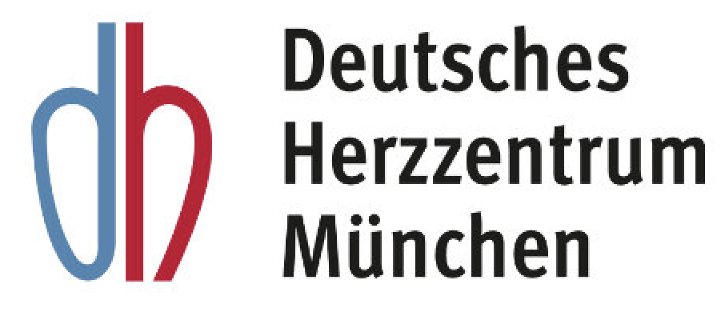
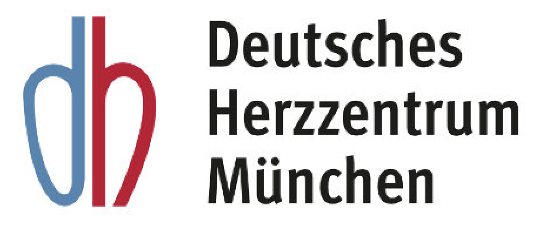

Our active spring-dampening system with acceleration cancelling technology ensures maximum protection during medical transport – whether on the road or in the air. Designed to minimize shocks and vibrations, it safeguards even the most fragile patients.
Cutting-edge deepTech for safe patient mobility.
Official Product Launch soon.
Magnetic Function
Magnetic suspension ensures stable positioning regardless of driving style relieving medical staff and allowing full focus on patient care.
Modular & Scalable
Integrates as an add-on into existing systems, works independently of the vehicle ensuring protection even outside the ambulance.
AI-Based High Performance
Real-time acceleration cancelling powered by AI responds reliably even in turbulence or poor road conditions.
99.9% Compensation
High-frequency vibrations are almost entirely neutralized for maximum safety during critical transfers.
10,000,000+ patient transports per year in Germany. These are carried out by ambulance, helicopter or in mountain rescue operations. In the USA, the figure is twice as high.
500,000+ vibration-sensitive transports with increased risk of complications or critical comfort needs – often worsened by poor road conditions or helicopter flights with high-frequency shocks affecting fragile patients.
life-threatening Vibrations can be life-threatening or seriously aggravating for people with pulmonary embolisms, spinal fractures, aortic dissections, multiple trauma or brain injuries, among others.
60,000+ Preterm births per year in Germany – many require immediate transfer after birth
+30 % Higher risk of brain hemorrhage due to transport-related vibrations – especially in neonatal patients
↑ Mortality Studies confirm increased risk of complications and mortality during transport of fragile patients
Tagesschau reports: One third of all newborns in Germany are delivered in hospitals offering only the lowest level of care (Level IV) – the lowest standard globally according to the WHO. Investigations by the ARD research network reveal that even these minimally equipped clinics admit high-risk pregnancies – contrary to guidelines.
Source: Tagesschau Report (April 2025)
Our technology enables vibration-free transport for newborns – serving as a vital link between the birth site and specialized care units. This reduces medical risk and helps avoid costly complications. When talking with Prof. Dr. Dr. Neysan Rafat, one of Germany’s leading neonatologists and responsible for over 350 neonatal transports per year, he emphasized the urgent need for a highly performant, retrofittable system like ours. His words reinforce what we experience in the field: the time for innovation in neonatal transport is now.
From neonatal care to emergency medicine – our system ensures vibration-free transport, protects patients, and supports healthcare staff.
Over 60,000 preterm births per year in Germany. Up to 30 % risk brain hemorrhage – often worsened by transport. In neonatal cases alone, avoiding a single brain hemorrhage can save up to €250,000.
For patients with aortic dissection, fractures or trauma, even small shocks pose serious risks. Our system minimizes jolts – from roadside to helicopter – ensuring safer conditions.
We track vibration exposure live – enabling data-based care improvements and clinical studies. This makes our solution not only therapeutic, but preventive and research-driven.
59.5 % of EMTs report strain-related issues. Our system relieves staff from manual stabilization, improving focus and reducing burnout across all vehicle types. This is also why we've received many letters of intent and strong collaborations from ambulance services.
Precision test stand – available for research and industry
From slow oscillations to fast high-frequency vibrations – adjustable and reproducible test scenarios.
Replicates real-world vibration levels – including neonatal and ambulance transport conditions.
Companies and research teams can book the stand to validate and optimize their own systems.
Includes advanced sensors for full data capture and post-analysis under real-world load.
We start with a focused conversation to understand your transport needs and context.
We provide tailored recommendations based on unique data from real-world vibration analysis.
We configure the system for your vehicle and perform on-site vibration analysis.
Includes updates, inspections, and optional high-resolution data evaluation.
For clinics, startups, or R&D teams: Our vibration test stand offers a bookable, controlled environment for realistic vibration scenarios — ideal to validate prototypes and compare technologies before full integration.
Book Test StandWe begin with neonatal transport in the DACH region and scale into high-demand sectors across Europe and the US. Our modular system unlocks multiple verticals—combining tangible health impact with scalable commercial potential. Due to strong customer demand, the short- and mid-term focus lies on the market for transport incubators. With two major partners already committed to purchasing once development is finalized, market traction is validated early. Long term, our scalable technology will address the broader market of patient transport stretchers. The combined target market amounts to approximately €24.4 billion, with an estimated SOM of €370 million.
Private capital is the key to unlocking public co-funding: An investment of €250,000 activates over €385,000 in committed public funding, enabling a fully financed 18-month roadmap. This covers technology development, regulatory preparations, team expansion, and initial market entry. Our go-to-market strategy is built on deep field validation, more than 100 structured expert interviews, and a pilot project with leading clinical partners. The solution addresses a critical unmet need in neonatal and critical care transport. Within five years, we aim to deploy 500 systems and establish a scalable, standardized production and distribution framework. The healthcare sector is undergoing rapid transformation. In the US alone, the home healthcare market grew from $68.3B in 2013 to $102.7B in 2020, with a projected CAGR of 7.48% reaching $253.4B by 2030 (U.S. Census Bureau 2022, Regency Healthcare 2023). Looking ahead, our vibration isolation platform extends beyond healthcare. Long-term growth opportunities include applications in quantum computing, aerospace, and battery manufacturing where we already hold several Letters of Intent. Our channel strategy includes direct sales through 1:1 outreach, for detailed insights into our customer segments, pricing model, and sales pipeline, please contact us directly.
€250,000
€385,000
10× projected within 2 years
We’re building a platform technology for vibration control – already validated in neonatal care and adaptable across sectors.
Private investment unlocks public co-funding. Let’s bring real DeepTech to real markets.
Doing what science has long called for: In collaboration with MedCareVisions, the Fire Department Munich, the German Heart Center and TUM, we conducted a realistic simulation of a neonatal transport including patient handover, incubator transfer, ambulance loading and a route across Munich's city center. The Fire Department used a full-size transport incubator and a premature-infant dummy provided by MedCareVisions. At the hospital, trained emergency personnel carried out transfers over stairs, thresholds and ramps just like in a real-life emergency.
This pilot project enabled one of the first continuous real-world vibration recordings during a complete neonatal transport. We observed significant dynamic forces across all axes with a dominant peak in the critical vertical Z-direction, known to be especially harmful to preterm infants.
Our data support previous scientific findings, but also reveal that force levels in specific situations can exceed established thresholds by a high factor particularly during loading, sudden speed changes, and rough terrain.
The simulated route included typical but vibration-sensitive environments: ambulance loading zones, cobblestone streets, fast road segments, and uneven surfaces such as construction areas or degraded asphalt.
In collaboration with

 

This technology can play a key role in enabling low-vibration neonatal transport — helping to reduce the risk of brain hemorrhage in extremely premature infants. A reliable system like this is urgently needed.
— Senior neonatologist at a major university hospital in Germany
This statement reflects a recurring concern we've heard in multiple expert interviews across leading hospitals. Many clinicians emphasized the need for a retrofit solution that meets the highest medical standards.
If you'd like to learn more or exchange insights, feel free to get in touch.
Several studies and guidelines report an association between neonatal transport and increased rates of complications and mortality. In adult emergency care, while high-quality data remain limited, mechanical stress is increasingly seen—based on physiological considerations and expert opinion—as a relevant factor affecting patient comfort, pain levels, and overall treatment stability.
Most observational studies have shown that preterm infants who were transported postnatally had a higher incidence of severe brain hemorrhages (grades 2–4). This underscores the potential role of transport as a critical risk factor during the first days of life – particularly for unstable and immature neonates.
Regardless of the mode of transport (ground or air), neonatal transport exposes infants to high levels of noise, vibration, and acceleration. Helicopter or fixed-wing aircraft transports offer the advantage of reducing the time needed for a specialized team to arrive and the overall transport duration, but may also involve increased noise and acceleration stress. In addition, a drop in cabin pressure can worsen respiratory status; a small observational study showed reduced cerebral oxygenation in some neonates.
Various mattresses have been tested for incubator transport, with gel mattresses transmitting the least vibration. However, due to limited literature, no definitive recommendation can be made. Gel mattresses may also pose a higher risk of injury in the event of an accident due to their weight.
Since noise and vibration can induce stress in neonates during transport—affecting heart rate—it is recommended to reduce noise exposure and ensure the use of hearing protection for newborns and preterm infants.
A retrospective view shows that vehicle and stretcher systems have improved significantly over the past 50 years – modern systems transmit significantly less vibration than older ones.
However, the transport environment remains highly stressful, particularly due to acceleration, braking, and take-off/landing maneuvers.
Manufacturers have attempted to adapt incubators to reduce noise, light, and temperature fluctuations – but the reduction of vibrations during transport remains an unsolved challenge.
In the United States, over 68,000 transports to specialized NICUs take place each year – and about 5,000 in Canada. Approximately 15% of births occur in hospitals without appropriate neonatal facilities. Transport to centers with intensive care capabilities is therefore often life-saving – but also represents a physiologically and logistically highly demanding phase.
Vibrations can destabilize vital signs and make monitoring and treatment more difficult – especially in emergency situations.
Bailey et al. (2019) tested various mattress configurations for ground transport, including:
The guideline explicitly states: “Transport should be as gentle as possible and pain-free.” This applies especially in the case of unstable pelvic or spinal injuries, in order to avoid secondary damage. The recommendation was reviewed in 2022 and holds GPP status (Good Practice Point).
The S3 guideline (AWMF 187-023) recommends: “Any extremity that is even suspected of being injured should be immobilized before major movement or transport.” This helps prevent pain, secondary injuries, and neurological deterioration. The recommendation carries a grade B ⇑ with a consensus strength of 94%.
According to the guideline: “Pain and the associated emotional stress can further raise blood pressure and contribute to the progression of the aortic dissection.” This implies the need for calm, low-vibration positioning to help keep patients stable and reduce the risk of dissection worsening.
The study shows that many of the vibrations occurring during ambulance transport fall within frequency ranges that are particularly sensitive for the head, abdomen, and spine. This can trigger physiological stress and compromise patient safety. The authors emphasize that improved stretcher designs with appropriate damping can significantly reduce transmitted vibration levels.
International guidelines, such as those from the European Society of Cardiology and the CHEST Journal, highlight the importance of preclinical stabilization in pulmonary embolism:
oxygen administration, anticoagulation, possible thrombolysis, and close monitoring of hemodynamic parameters.
Although low-vibration or immobilizing positioning is not explicitly recommended, it may be beneficial for unstable patients to avoid further cardiac stress or adverse reactions.
Claramonte et al. (2024) documented significant physiological stress markers in a study involving 27 paramedics following real emergency operations.
In addition to elevated blood pressure and heart rate, there was a clear increase in salivary amylase—a reliable marker for acute psychosomatic stress.
Source: Claramonte et al. (2024) – PubMed
Schmidt et al. (2023) conducted a nationwide online survey involving more than 900 emergency medical personnel in Germany.
The results indicate persistent mental strain, especially due to complex cases, responsibility for unstable patients, physical strain from vibration, and time pressure during transport.
Source: Schmidt et al. (2023), Notfall + Rettungsmedizin
The AWMF guideline on aortic dissection (Type B) emphasizes: “Pain and the associated emotional stress can further increase blood pressure and thus contribute to the progression of the dissection.”
A calm, low-vibration positioning appears essential.
The actual number of cases is likely underestimated: autopsy studies show that up to 50% of aortic dissections go unrecognized in emergency departments.
AWMF 004‑034, 2022
Source: Ärzteblatt
Source: DGK
Source: BDC
Source: UK Regensburg
Source: RBB Praxis
While multiple studies have shown that neonatal transport is associated with increased risks of complications and mortality, the direct causal link between mechanical stress (e.g. vibrations, acceleration, noise) and clinical outcomes remains insufficiently understood.
Still, evidence suggests that acute stress—triggered, for example, by unstable positioning—can worsen the course of vulnerable conditions, especially in unstable patients. Reports from emergency personnel and physicians reinforce this assessment.
Muniqo Performante is the first to enable continuous measurement of mechanical stress on patients throughout the entire emergency care pathway. This lays the foundation for medical evidence that can establish a causal link and support targeted improvements in patient transport.
Muniqo Performante is an innovative startup offering a universal solution for vibration elimination. Using cutting-edge technology, powered by magnetism and innovative features, we surpass state-of-the-art anti-vibration systems.
Currently, Muniqo Performante focuses on emergency medicine and neonatology, providing a solution for the safe, vibration-free transport of critically ill patients and premature infants. This reduces the risk of injuries and long-term health complications, such as brain hemorrhages, and enhances overall medical care.


Vibrations in laboratory technology can affect the precision of sensitive measurements, leading to inaccurate data and compromised results.

Vibrations in aerospace can cause wear and tear on components, affect the stability of equipment, and lead to malfunctions during critical operations.
In battery production, vibrations can affect the assembly line and compromise the quality of battery cells, leading to reduced lifespan or safety risks.

Vibrations in quantum technology can interfere with the precision of quantum computing, reducing the effectiveness of delicate operations.
Vibrations during transport can damage sensitive goods, leading to contamination or safety hazards in the transportation of dangerous goods or perishable foods.
With our universal solution, we enhance the performance of any system. We also offer full customization to meet your specific needs and preferences. This includes precise vibration measurement to improve your control and optimize results.
From first prototype to early validation through the TUM IdeAward.
Luca and Sebastian, friends since elementary school, are both trained engineers at the Technical University of Munich with complementary backgrounds. Sebastian, a mechanical and automotive engineer, developed the core idea for Muniqo’s technology driven by his passion for engineering solutions and shaped by his experience at BMW, where he worked on patented magnetic systems. Luca studied Electrical and Biomedical Engineering, spending several semesters studying Human Medicine. During his translational MedTech research on highly innovative acoustofluidic cell function analysis at TranslaTUM, he co-led a team of talented students with Prof. Hayden during the Go-Bio Spin-Off funding period. Together, they built their first proof of concept in 2023, combining Sebi’s vision and mechanical design with Luca’s system architecture and control logic. The project won 3rd place at the renowned TUM IdeAward, earning €10,000 and confirming the strong potential of their solution.
Market validation, a first real-world pilot project and the approval of the EXIST grant
In early 2024, while still completing their studies, Luca and Sebastian applied for the XPLORE program to evaluate the full potential of their technology. After being accepted, they expanded the team with project students from TUM School of Management. Together, they analyzed various application fields for a universal vibration compensation system. Through XPLORE, they gained valuable business insights, conducted early market research, and identified neonatal transport as the most urgent and structured entry market. The technology’s flexibility became clear across multiple sectors. During this phase, they also collected over 10 Letters of Intent from clinical and industrial stakeholders, confirming the broad interest in their solution. A realistic pilot project was launched in cooperation with the Munich Fire Department, the Herzzentrum, and neonatology experts – enabling real-world vibration measurements during neonatal transport. These insights laid the groundwork for the technical and clinical development roadmap. Shortly after, their EXIST funding application was approved, setting the stage for full-time development.
Full-time development, the approval of the ESA BIC funding, and growing strategic partnerships.
After concluding their studies, Luca and Sebastian fully committed to Muniqo in January with the start of EXIST funding, which now supports both operational costs and materials. With full-time focus, development accelerated significantly. In March, Muniqo was accepted into the ESA BIC program – based on the broad technological applicability, including future use cases such as vibration-compensated sensor stabilization on satellites to improve resolution. In parallel, the team grew: over 10 academic projects – including theses and group projects – have already been completed in collaboration with TUM, leading to the recruitment of the first permanent team member beyond the founders: business lead Marie Hesel. Collaborations with TUM Venture Labs and Fraunhofer enabled advanced prototyping and iterative development, including early-stage production capabilities in Garching and multiple system refinements. The pilot project launched in 2024 now enters its second phase in close collaboration with the Munich Fire Department and neonatology teams. Product integration and field tests are scheduled for late 2025. In January, the team won first place at the Munich Impact Incubator. In June, they were finalists at TUM Pitch Perfect, and they are now finalists at Generation D.
From pilot success to certification, first clinical installations and multiple sales.
By mid-2026, product development will be finalized, including the completion of Pilot Project Phase 2. The next step – Phase 3 – aims to validate the system in helicopter-based neonatal transport. With CE marking under MDR Risk Class I and a finalized patent, first installations and sales are planned for the second half of the year. Initial deployment will focus on existing Letter-of-Intent and pilot partners, enabling ongoing feedback and close alignment with clinical needs. The goal is to ensure a smooth and validated market entry. Looking ahead to 2030, Muniqo aims to become the new standard for vibration-free solutions in critical transport – with expansion into aerospace, satellite sensor stabilization, and high-tech industrial applications.
Standard of care in critical transport and expansion into new billion-euro markets.
By 2030, Muniqo will be firmly established as the go-to solution for safe, vibration-free patient transport. With over 500 systems deployed, the company will have scaled up in-house production to make the technology more affordable and widely accessible. Beyond the core product, Muniqo will have become a leader in vibration diagnostics and customized vibration-reduction solutions across medical and industrial sectors. Scaled manufacturing will enable high-volume sales, opening up new markets such as battery coating, precision manufacturing, and logistics. The goal: unlock a healthcare market of over €350 million – and beyond that, tap into multi-billion euro opportunities across industries. Most importantly, by 2030, Muniqo will have made a measurable impact: saving lives, especially in neonatal transport.

Muniqo Performante is one of the winners of the TUM IDEAward 2023. The start-up was recognised for its innovative technology and its great economic and scientific potential.

By participating in UnternehmerTUM's Xplore programme, we gained valuable business knowledge that we lacked as engineers, helping us to take our start-up to the next level.


Our cutting-edge solution delivers unmatched vibration control, optimizing your processes for maximum performance.
Revolutionizing vibration control – from Munich to the world. Up to 99.9% reduction enabling breakthrough performance in MedTech, manufacturing, aerospace and emergency transport. SDG 9 – Industry, Innovation and Infrastructure
From student research to venture creation – in close cooperation with Germany’s top academic institutions. A launchpad for entrepreneurship, translational research and cutting-edge MedTech development. SDG 8.b – Youth employment, education & training
More than 500,000 vibration-sensitive patient transports take place in Germany every year alone. Our technology reduces risk during transport and improves survival and long-term outcomes. SDG 3 – Good Health and Well-being
Reach out via email at:
info@muniqoperformante.com